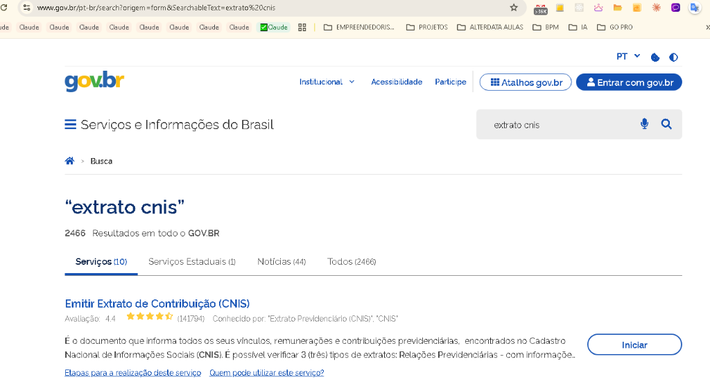
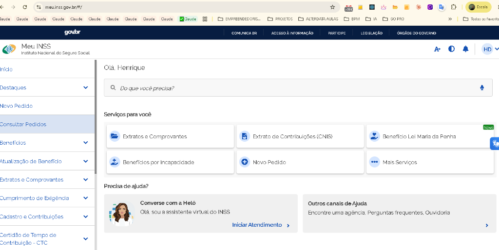

JORGE RUBENS TESTE DEMONSTRATIVO
CNIS 100% Auditado Caso Demonstrativo⚙️ Simulador Atuarial em Tempo Real
Alterne as opções abaixo ou clique nos atalhos rápidos da matriz para ver o recálculo instantâneo.
🎯 Comparativo dos Marcos Estratégicos da Matriz (Clique para Simular):
📈 Curva de Sensibilidade da Matriz Combinatória
Veja a Média subindo em azul, o Coeficiente caindo em âmbar e a RMI final atingindo o pico verde em k = 240 (15 anos de TC rigorosamente preservados):
📋 Tabela Completa da Matriz de Combinação de Descartes
241 combinações testadas| Descartes (k) | Salários Restantes | Marco / Estratégia | Média dos Salários | Tempo Restante | Coeficiente | RMI Resultante | Ganho Mensal | Simular |
|---|
⚖️ Auditoria Detalhada dos Salários: Preservados vs. Descartados
Alterne a visualização abaixo para ver em tela cheia os Melhores Salários ou os Descartados:
Melhores Salários Preservados
Salários de maior valor corrigido que formam a sua Média de Ouro
| # | Comp. | Tipo / Vínculo | Nominal | INPC | Corrigido |
|---|
💡 No ponto ótimo (k=244), restam os 25 maiores salários corrigidos (cooperativas e Clube Naval), alcançando a média de R$ 6.401,98.
Salários Menores Descartados
Excluídos legalmente pelo Art. 26 para não puxar sua média para baixo
| # | Comp. | Tipo / Vínculo | Nominal | INPC | Corrigido |
|---|
⚖️ Todos os 45 meses de MEI e carnês de salário mínimo são expurgados com respaldo no art. 26, § 6º da EC 103/2019, sem prejuízo à carência (resguardada pela Marinha).
3 Vínculos com Indício de Erro / Extemporaneidade Detectados pela IA PreviMaster
Nossa inteligência artificial identificou que o extrato CNIS possui pendências que impedirão a concessão imediata ou reduzirão a aposentadoria em quase R$ 1.000,00 por mês se não forem retificadas preventivamente:
15 anos e 4 meses desconsiderados pelo INSS por ausência de CTC formal. Risco de perda de carência.
Competência com recolhimento abaixo do piso (PSC-MEN-SM). Exige complementação ou agrupamento legal.
Recolhimento duplo no mesmo mês. Descarte legal do MEI preserva o teto da Cooperativa sem custos.
🔍 Diagnóstico Automático e Auditoria de Indicadores Previdenciários
O sistema escaneou os 16 vínculos do CNIS de Jorge Rubens Teste Demonstrativo e identificou 4 indicadores que exigem ação preventiva pelo advogado antes da concessão:
O INSS desconsiderou mais de 15 anos de tempo de serviço militar e civil (1983 a 1999 com saída via PDV) porque não houve juntada de Certidão de Tempo de Contribuição (CTC) expedida pelo Comando da Marinha. Com a emissão e averbação dessa CTC, esse período ingressa integralmente no RGPS.
Recolhimento sobre R$ 1.204,40 (abaixo do mínimo de R$ 1.412,00). Deve ser complementado via DARF/GPS complementar ou agrupado no Meu INSS para não ser perdido para tempo e carência.
Recolhimentos com alíquota reduzida de 5%. Não contam para as regras de transição de tempo sem complementação de 15%, mas CONTAM SIM para Aposentadoria por Idade (65 anos) sem necessidade de gastar um único centavo de complementação!
Nos meses em que houve recolhimento como MEI e como Cooperativa (Seq 11), a remuneração da Cooperativa foi de R$ 6.000 a R$ 6.433 (no teto do RGPS!). O MEI concomitante pode ser totalmente descartado sem qualquer prejuízo.
Histórico Cronológico dos 16 Vínculos Auditados:
⚖️ Simulação em Lote de Todas as Regras da Previdência Social
O motor atuarial rodou o cruzamento entre o histórico previdenciário e todas as opções legais da Emenda Constitucional nº 103/2019 e da Lei 8.213/91:
📈 Evolução Histórica dos Salários de Contribuição (INPC / Plano Real)
Comparativo entre salários nominais da época e salários corrigidos mês a mês pelo INPC oficial do BACEN até 2026:
💰 Projeção de Fluxo de Caixa Acumulado na Aposentadoria (20 Anos de Sobrevida)
Demonstração do patrimônio acumulado pelo segurado no Cenário Otimizado vs Cenário Convencional sem planejamento:
📋 Auditoria Completa de Salários do PBC (Desde 07/1994)
269 competências analisadas| Competência | Origem / Vínculo | Valor Nominal | Fator INPC | Valor Corrigido | Status no Cálculo |
|---|
🏛️ Parecer Técnico Atuarial & Requerimento Administrativo para o Meu INSS
Elaborado em rigorosa consonância com a EC 103/2019, art. 26, § 6º, IN 128/2022 e jurisprudência do STJ.
📥 Como Baixar seu Extrato CNIS no Meu INSS / Gov.br
Siga este guia ilustrado com capturas de tela oficiais para obter o extrato em formato PDF em menos de 2 minutos. Com este arquivo oficial em mãos, o PreviMaster AI audita 100% dos salários, aplica a matriz de descartes da EC 103 e maximiza sua aposentadoria.
O portal Meu INSS oferece 3 opções para download. Você DEVE selecionar a 2ª opção: "Relações Previdenciárias e Remunerações". A opção simples contém apenas datas de admissão e demissão (sem salários), o que impossibilita o cálculo da média contributiva, PBC, descartes da EC 103 e RMI.
1️⃣ Acessar o Portal Gov.br ou Meu INSS
Acesse o site gov.br ou digite "extrato cnis" no Google. Localize o serviço oficial "Emitir Extrato de Contribuição (CNIS)" e clique no botão azul "Iniciar". Em seguida, faça login com seu CPF e senha da conta Gov.br (Bronze, Prata ou Ouro).

Tela do Gov.br: localize "Emitir Extrato de Contribuição (CNIS)" e clique em Iniciar
2️⃣ Clicar em "Extrato de Contribuições (CNIS)"
Após autenticar no portal meu.inss.gov.br (ou no app de celular), procure na tela inicial o card com o ícone de documento intitulado "Extrato de Contribuições (CNIS)". Se necessário, use a barra de busca "Do que você precisa?".

Painel do Meu INSS: clique diretamente sobre o card "Extrato de Contribuições (CNIS)"
3️⃣ Clicar em "Baixar PDF" e Marcar "Remunerações"
No rodapé da página do extrato no Meu INSS, localize e clique no botão azul "Baixar PDF". Uma janela modal será exibida perguntando qual modelo deseja emitir:
Contém apenas períodos e datas de empresas. Não tem salários! Não serve para calcular a RMI nem descartes da EC 103.
Esta é a opção 100% completa! Contém todos os salários de contribuição mês a mês desde 1976 até a data atual, indicadores especiais e vínculos.
Agrupa os salários por ano fiscal, útil somente para fins de Imposto de Renda.
Após marcar a 2ª opção, clique em "Confirmar" e salve o arquivo gerado (formato .pdf) em sua máquina ou celular.
4️⃣ Carregar o PDF no PreviMaster AI
Pronto! Com o arquivo PDF do CNIS baixado, basta carregá-lo no PreviMaster AI. O sistema processa o documento instantaneamente no seu próprio navegador:
- Atualização monetária de todos os salários pelo INPC oficial (Série SGS 188);
- Simulação combinatorial de 0 a centenas de descartes (EC 103/2019, art. 26, § 6º);
- Identificação exata do ponto ótimo de RMI e ganho patrimonial vitalício;
- Auditoria minuciosa de indicadores de pendência (PEXT, PREM-RET, IRECD-ACERTO);
- Emissão do Parecer Técnico Oficial pronto para juntar ao requerimento do Meu INSS.
Processamento 100% seguro no navegador • Conformidade total com a LGPD
❓ Dúvidas Frequentes sobre a Emissão do CNIS
💳 O serviço de emissão é gratuito?
Sim! O CNIS é um serviço público 100% gratuito garantido por lei e mantido pelo Governo Federal / DATAPREV. Nunca pague intermediários ou despachantes apenas para obter esse extrato.
🔒 Qual nível de conta Gov.br é exigido?
Recomenda-se conta nível Prata ou Ouro. Se a sua for Bronze, você pode subir de nível gratuitamente em 30 segundos fazendo login pelo aplicativo do seu banco credenciado (Banco do Brasil, Caixa, Bradesco, Itaú, Nubank, etc.) ou biometria facial CNH/TSE.
📱 Posso fazer tudo pelo celular?
Sim! Instale o aplicativo oficial "Meu INSS" na Google Play Store (Android) ou App Store (iPhone). Os passos e opções para selecionar "Relações Previdenciárias e Remunerações" são exatamente iguais.